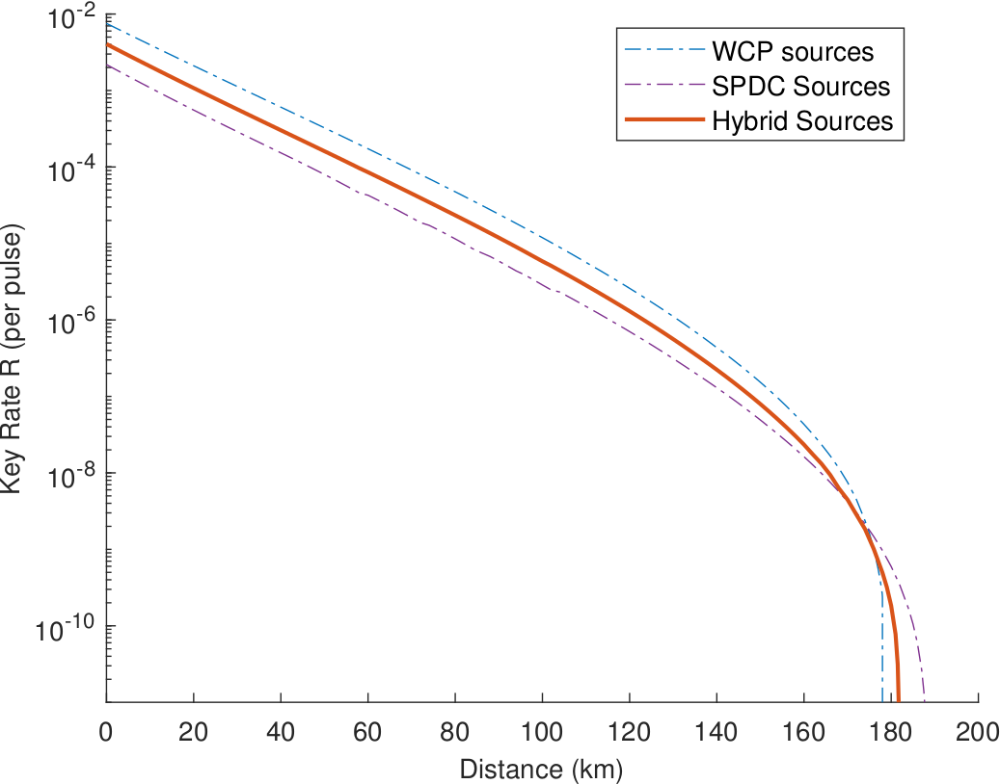

量子密码
Quantum Cryptography从安全性证明到实际系统的非理想因素：光源、探测端与信道的不对称会怎样影响协议的性能。
2025 年本科毕业于中国科学技术大学（USTC）物理学专业原子与分子物理方向；目前在 USTC 光学与光学工程系量子科学与技术专业攻读博士学位，主要研究量子通信与量子纠缠相关的理论。
本科与研究生期间担任过三年助教，也参与过两年「朋辈助学」帮扶计划的志愿工作。在研究和助教期间积累了一些学习与调研的笔记，放在这里供交流分享——请勿用于商业用途。
除了这些笔记，我还在维护一个论文速递站点「量子信息速递」：它按 APS、Nature、Science、Optica 四大系列的目标期刊以及 PNAS 检索量子信息与量子技术领域的新发表工作，筛掉不相干的方向后按期刊汇总，每一条给出中英文标题、作者、卷页与中文摘要，点 DOI 直达原文，每天 08:00 自动更新。中文标题与摘要译文由模型生成，速度优先、难免疏漏，欢迎指出。
从安全性证明到实际系统的非理想因素：光源、探测端与信道的不对称会怎样影响协议的性能。
纠缠作为一种资源，怎么被认证、被量化，又怎么在通信协议内被利用。
从公理出发把概念搭起来的那一类：选择公理保证每个向量空间都有基，定义了内积才谈得上它诱导的范数与拓扑。它们决定「能定义什么、定义得对不对」。
可以直接拿来算、拿来估的定量结论：熵被不确定性约束到什么程度，又怎么沿着一整条协议累积下去。往后还会收进矩阵分析（如弱主序）、凸优化与常见集中不等式。

Physical Review Applied 24, 044045 (2025)
Measurement-Device-Independent Quantum Key Distribution with Asymmetric Sources
测量设备无关量子密钥分发（MDI-QKD）把测量端的一切攻击从安全假设里拿掉，是构建端到端量子网络最有希望的方案之一。但真实系统里两端的光源很难做得一样：单模与多模、弱相干脉冲与自发参量下转换（SPDC）光源常常混着用。我们给出了两个 MDI 用户在不同模式、不同光源下性能的解析理论，并以 WCP 与 SPDC 的组合为例计算密钥率——结果显示不对称并没有让性能掉下来，全距离范围内都维持在可用水平。
目前只有这一篇是第一作者工作；后续的论文会接在下面。
如果对这里的主页或「量子信息速递」有建议，或者发现资料、论文里有纰漏、谬误、值得讨论的问题，欢迎直接来信。
本站同时发布在 GitHub Pages（dengjiajv.github.io）与 Cloudflare Pages 国内镜像（dengjiajv.pages.dev），内容一致；国内访问镜像更快。